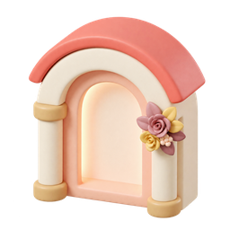
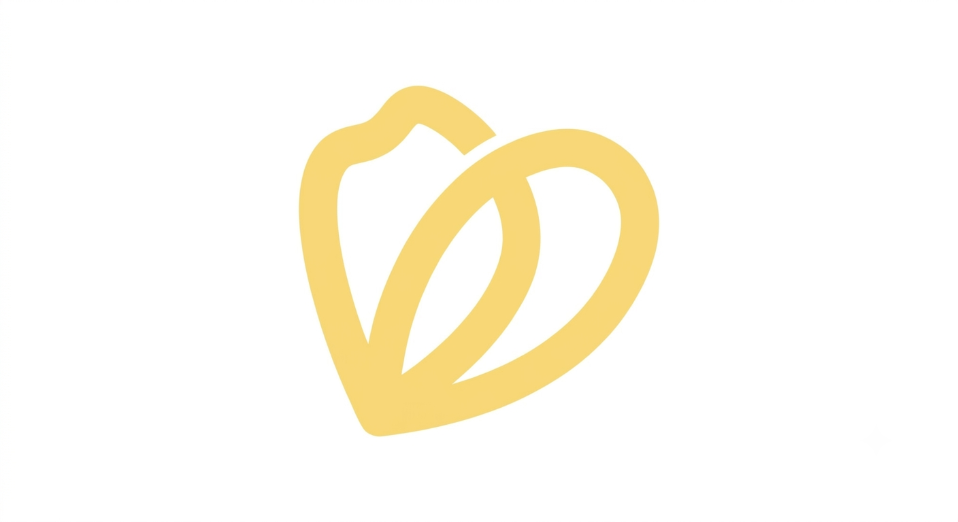
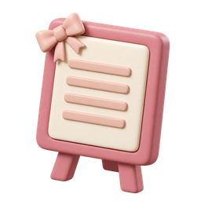
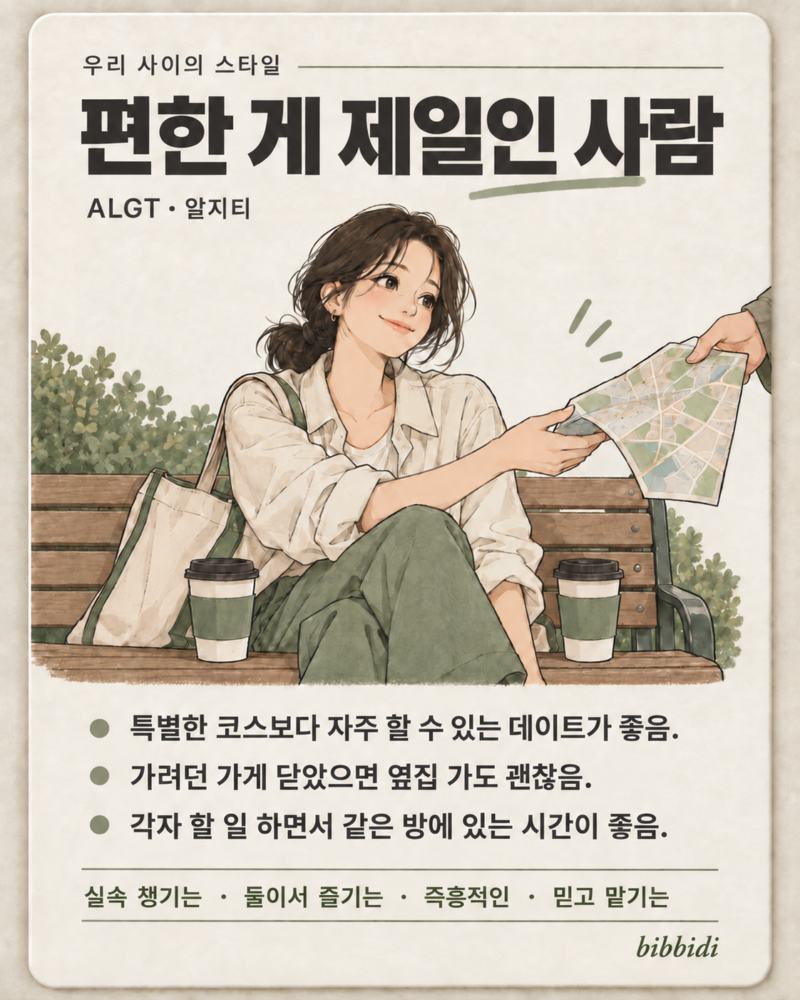

01 준비 전
웨딩홀 정하기
내 할 일 0개
준비할 일웨딩홀 투어
할 일 2개 보기

bibbidi 비비디 시작하기01 · 다시 늘어나는 결혼
2025년 국내 혼인신고는 24만 326건.
2023년부터 3년 연속
증가했어요.
많은 사람이 결혼을 준비하지만,
각자의 준비는 여전히
처음이니까요.
2022년보다 25.4% 늘었어요.
02 · 처음이라 어려운 준비
많은 선택과 준비를,
익숙하지 않은 사람이 직접 관리해야 하는
일.
결혼준비대행 이용 경험자 2,956명 · 2025년 조사
업체 정보나 업체 선정 등
결혼준비대행 이용 경험자 2,956명의 서비스 이용 이유 · 2025년 조사
한국소비자원 「결혼서비스 시장 진단 및 개선방안 연구」 표 3-33
↗
03 · 준비를 한눈에 이해하도록
우리에게 필요한 준비를 담고,
끝낸 일과 남은 일을 함께
확인해요.
카테고리와 단계로 준비를 확인해요.
상태와 진행 상황이 함께 바뀌어요.
다음에 할 일을 다시 찾을 필요 없이.
9개 단계 · 내 할 일 0개

01 준비 전
내 할 일 0개

02 준비 전
내 할 일 0개
03 준비 전
내 할 일 0개
04 준비 전
내 할 일 0개
05 준비 전
내 할 일 0개
06 준비 전
내 할 일 0개
3개 할 일 · 0개 완료 · 3개 남음
현재 서비스 UI를 바탕으로 구성한 예시예요. 진행 상태와 일정은 설명용 데이터예요.
04 · 목록을 내 준비로 옮기는 부담
실제로 배포하고 사용자가 사용하는 모습을 보니 알게 됐어요.
내 할 일로 담기 전에도, 이해하고 판단해야 할 것이 많았어요.
처음이라 무엇을 준비해야 하는지,
무엇을 모르고 있는지도 알기 어려우니까요.
그래서, 상황을 듣고 필요한 준비를 안내하는
결혼 플래너의 상담
방식에 주목했어요.
05 · 플래너에게 상담하듯
지금 상황을 말하고, 필요한 준비를 고르면
옆의 체크리스트에
바로 이어져요.
무엇을 했고, 무엇이 궁금한지.
선택하지 않은 준비는 담기지 않아요.
선택한 할 일이 왼쪽 목록에 추가돼요.
2개 할 일 · 2개 완료
궁금한 준비를 말해주시면 나에게 맞는
안내를
드려요.
웨딩홀은 계약했어요.
다음엔 뭘 준비하면
될까요?
웨딩홀을 정하셨군요!
이제 예식 진행 방식과
함께할 사람들을 정하면 좋아요.
추가할 할 일을 선택해 주세요.
선택한 준비 2개만 왼쪽 목록에 추가됐어요.
실제 서비스의 대화·추천 UI를 바탕으로 구성한 예시예요.
애니메이션에서
입력하거나 저장하는 내용은 계정에 반영되지 않아요.
06 · 가볍게 알아보는 우리
무엇을 물어볼지도 막막할 땐,
선택하기 쉬운 질문부터
만나보세요.
가볍게 취향을 알아보고,
우리에게 맞는 준비 목록으로 이어져요.
로그인 없이, 평소의 취향대로.
어떤 결혼을 원하는지 조금 더 구체적으로.
필요한 항목을 고르고 로그인 후 저장해요.
아직 잘 모르겠어

우리에게 맞는 준비를 아래에서 확인해요
목록을 확인하고 필요한 항목을
체크리스트에
담아보세요.
✓ 이제, 하나씩 시작하면 되니까.
현재 서비스의 실제 질문·이미지·유형 결과를 사용했어요.
질문
과정과 로그인 후 선택한 준비를 담는 흐름을 요약한 예시예요.
07 · AI 고도화
질문에 필요한 판단의 깊이에 맞춰 AI를 선택하고,
답변은 만들어지는 대로 먼저 전달해요.
“스드메가 뭔가요?”
용어·절차처럼 설명만 필요한 질문“식장 계약 후,
다음 할 일은?”
“투어를 마쳤어요.
이제 뭐부터?”
간단한 질문은 속도와 비용을, 복잡한 상담은 정확한 상황 판단을 고려해요.
멀티 모델 설계 기준 · 개발 환경은 Qwen 사용 · 실측 성능 점수 아님
첫 답변 조각을 기다리고 있어요.
웨딩홀 계약을 마치셨군요. 이제 촬영 일정을 정하고, 예식 진행 방식도 확인해 보세요.
결혼 준비와 관계없는 요청은 답변 생성 전에 걸러, 필요한 상담에 집중해요.